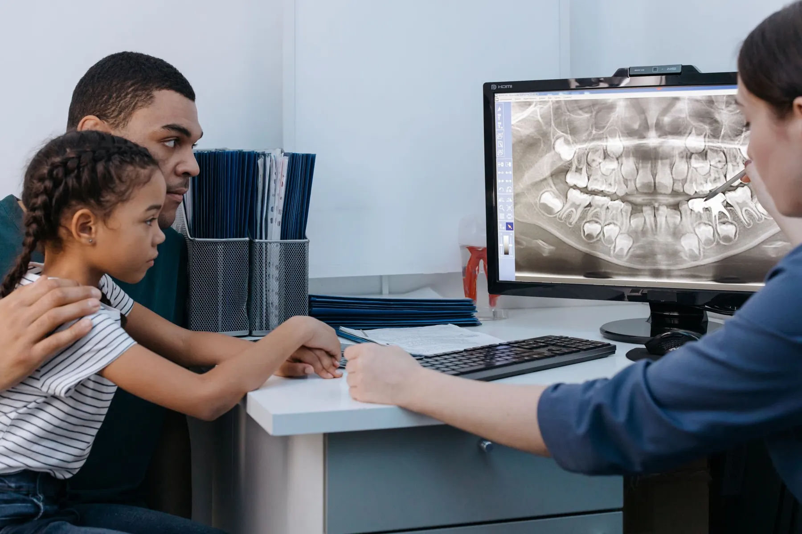
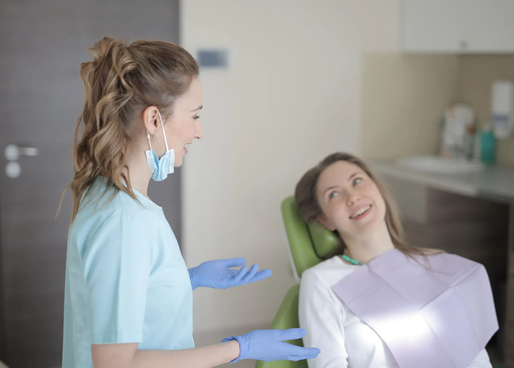
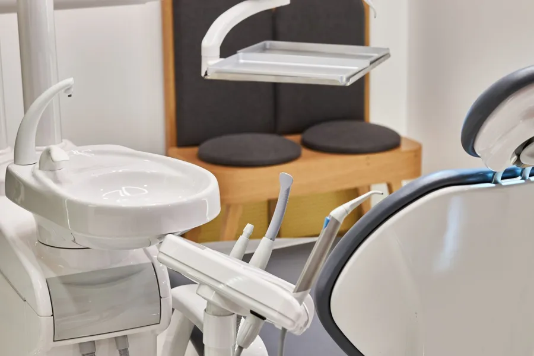
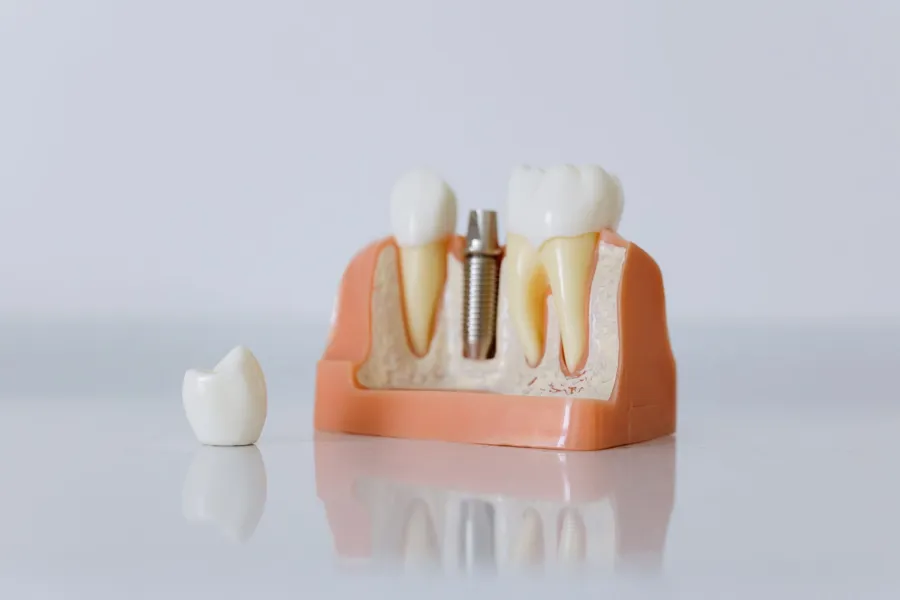

Ailenizle birlikte gelin.
Kimin ne için geleceğini seçin, sırasını belirleyin. Randevu mesajı sizin yerinize yazılsın.
Diş hekimine gitmek, ailece bir tek seferde halledilecek iş gibi olabilir; yeter ki kim geliyor, ne için geliyor baştan belli olsun.
Kapıdan girince ne olur?
Genel bir anlatım: yayında kliniğin kendi akışı yazılır.
 Fotoğraflar temsilîdir
Fotoğraflar temsilîdir
Sizi dinleriz.
Şikâyetiniz, daha önce yapılan tedaviler, kullandığınız ilaçlar: kısa bir konuşma. Sağlık bilgilerinizi mesajda yazmanız gerekmez.
Gerekirse görüntüleriz.
Muayenede gerek görülürse röntgen ya da başka bir görüntüleme istenir. Bulgular ekranda birlikte incelenir.
Muayene eder, anlatırız.
Ağız içi muayene sonrası bulguları sade bir dille anlatırız. Neyin acil, neyin bekleyebilir olduğunu konuşuruz.
Seçenekleri birlikte belirleriz.
Tedavi seçenekleri anlatılır; hangisine ne zaman başlanacağı sizin kararınızla belirlenir. Evde bakım için de kısa öneriler alırsınız.
Yaptığımız işler.
Örnek başlıklar: kliniğin kendi listesiyle değişir. Genel bilgidir; size uygun olanı muayenede hekiminiz belirler.Muayene ve kontrol
Ağız ve dişlerin genel değerlendirmesi; gerekirse röntgen.
Diş temizliği
Diş taşı ve plak temizliği; evde bakım önerileri.
Dolgu
Çürük ya da kırılma nedeniyle kaybedilen diş dokusunun onarımı.
Kanal tedavisi
Dişin iç dokusunun temizlenip doldurulması; amaç dişi ağızda tutmak.
İmplant
Eksik dişin yerine yerleştirilen yapay kök ve üzerine yapılan diş.
Ortodonti
Diş ve çene dizilimindeki düzensizliklerin tel ya da plaklarla düzeltilmesi.
Çocuk diş hekimliği
İlk kontrol, koruyucu uygulamalar ve süt dişi tedavileri.
Sorunuz mu var?
Listede olmayan bir konu için de arayabilir ya da WhatsApp'tan yazabilirsiniz.

Rahat ve sakin bir muayene.
Kim geliyor? Sırası ne?
Gelecek kişileri seçin, sıralayın, her biri için konuyu ve size uygun günü belirleyin. Sağdaki bilet WhatsApp mesajınıza dönüşür.
Fatih Caddesi, Denizli.
- Adres
- Fatih Cd. 78 A
Merkezefendi / Denizli - Telefon / WhatsApp
- 0532 491 73 20
- @hazandental
Kareler.




